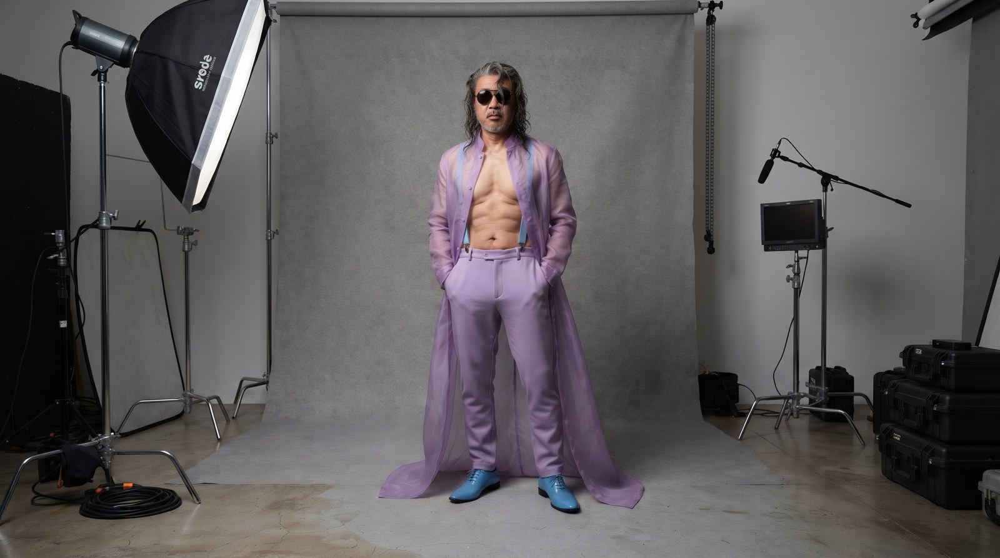

オリジナル楽曲の制作をお受けいたします
1曲 3,690円
大切な方への贈り物に、記念日に、愛するペットのテーマソングに。ご希望をうかがって、ウォルター・パープルが作詞・作曲いたします
制作はお支払いの確認後にはじめます。お届けは約1週間です
歌詞が決まったあとの作り直しは、1回無料です
完成した曲は YouTube でお届けします。ペットの歌は、iTunes など世界の音楽配信へのリリースも無料で対応いたします
著作権は Walter Purple に帰属いたします
ご注文・お問い合わせは、こちらのメールアドレスへどうぞ